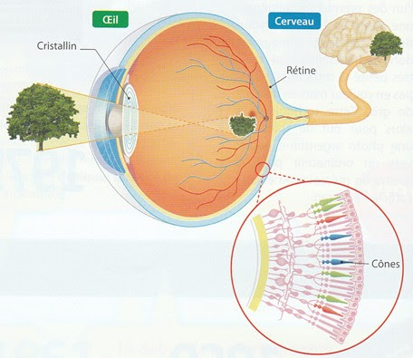
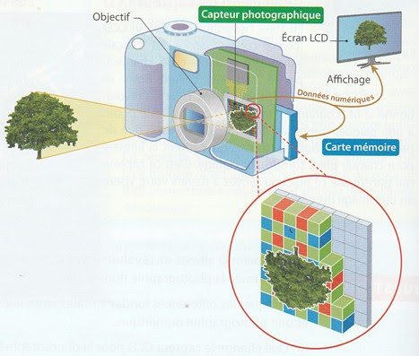
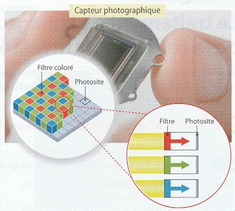
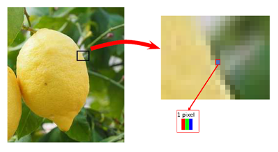
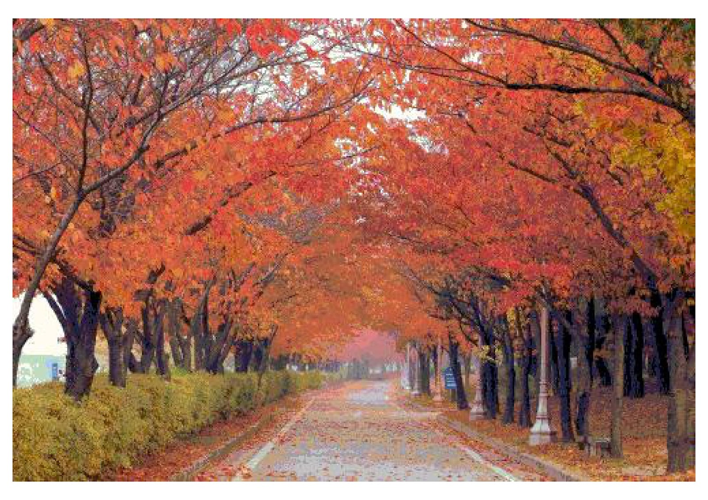
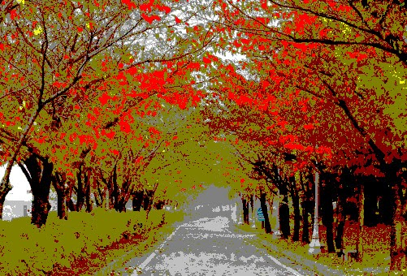
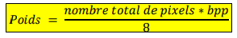

partie 1: L'oeil et le capteur numérique
1. L'oeil et le capteur photographique
La vision humaine
Les rayons lumineux provenant d'un objet sont projetés au fond de l'oeil sur la rétine.
Celle-ci comprend des cellules sensibles à la lumière : les cônes. certains cônes perçoivent la couleur rouge, d'autres la couleur verte et d'autres la couleur bleue. Les cônes sensibles au vert sont les plus présents chez l'être humain. Ils transforment l'énergie lumineuse en impulsion électrique. Cette impulsion est transmise au cerveau par l'intermédiaire du nerf optique. La couleur est ensuite reconstituée par le cerveau par addition du rouge, du vert et du bleu.

L'appareil photo numérique
Les rayons lumineux provenant d'un objet sont projetés dans l'appareil photo sur le capteur photographique. Celui-ci est constitué de cellules sensibles à la lumière. La mesure de l'intensité lumineuse est transformée en données numériques puis stockée dans la mémoire de l'appareil.

Le fonctionnement du capteur photographique
Les capteurs photographiques sont des éléments électroniques sensibles à la lumière, qui produisent des électrons (de l'électricité) lorsqu'ils reçoivent des photons (de la lumière). Un capteur d'appareil photo numérique est composé de cellules photosensibles : les photosites. Pour que ceux-ci distinguent les couleurs, chacun est placé derrière un filtre qui ne laisse passer que les rayons d'une seul couleur : rouge, vert ou bleu (2 verts, 1 rouge et un bleu par carré). Les photosites mesurent ainsi l'intensité lumineuse des rayons rouges (R), des rayons verts (V) et des rayons bleus (B). La tension électrique produite est ensuite convertie en nombre et envoyée au processeur de l'appareil photo. La définition d'un capteur est le nombre total de ses photosites.

Exercice 1
- En comparant les images schématisant la vision humaine et l'appareil photo numérique, quel est l'équivalent au niveau de l'appareil numérique :
a. du cristallin de l'oeil humain ?
b. de la rétine de l'oeil ?
c. du cerveau humain ?
d. d'un cône ?
Où se situe le capteur d'un appareil photo ?
Pourquoi mettre sur un capteur photographique deux fois plus de photosites sensibles à la couleur verte qu'aux deux autres couleurs ?
Que représente la définition d'un capteur photo ?
Quels sont les principaux éléments d'un appareils photos ? Résumer son principe de fonctionnement.
Notion d'image numérique
Une image numérique est constituée d’un ensemble de pixels, c’est-à-dire de petits carrés colorés disposés les uns à côté des autres sous la forme d'un tableau à deux dimensions, le pixel représente ainsi le plus petit élément constitutif d'une image numérique.
Chaque pixel est caractérisé par sa position sur l’image (sous forme de coordonnées), et sa couleur.

Exemple 1: si par exemple les dimensions de l’image sont 300 pixels en largeur et 200 pixels en hauteur, sa définition sera de 60 000 pixels (60 000 = 200 x 300).
Remarque: On parle aussi de définition lorsqu’on veut exprimer la qualité d’un appareil photographique : si un fabricant annonce que son appareil a 18 mégapixels (soit 18 millions de pixels), cela signifie qu’il prend des photographies dont les dimensions sont 5184 × 3456 pixels.
Cependant en pratique, il est bien difficile de distinguer une photo à 18 mégapixels d’une autre à 12 mégapixels.
Question: On considère une photographie ayant 500 pixels en longueur et 400 pixels en largeur ; sa définition sera de :
Résolution d'une image (en dp****i)
La résolution d’une image est exprimée par un nombre de pixels par unité de longueur (souvent le pouce, soit 2,54 centimètres).
Comment calculer la résolution (en dpi) d’une image ?
Pour calculer la résolution en dpi d’une image, il faut prendre deux paramètres : la définition de l’image et la taille de l’impression que vous souhaitez obtenir.
Par exemple, pour connaître la résolution d’impression d’une image de 6000 x 4000 px (définition de 24 Mpx) tirée au format A3 (29,7 x 42cm), un petit calcul s’impose avec cette formule :
(taille en pixels x 2,54) / taille en cm = dpi
soit
(6000 x 2,54) / 42 = 362 dpi
(4000 x 2,54) / 29,7 = 342 dpi
Comment calculer la taille en cm pour une image à partir de sa définition ?
Plus que de connaître la résolution pour un format de tirage donné, il est important de connaître la taille d’impression maximale que l’on peut atteindre avec une résolution optimale (300 dpi). Pour cela, un second produit en croix est utile.
Sur le même exemple (photo d’une définition de 6000 x 4000 px), cela donne :
(taille en pixels x 2,54) / dpi = taille en cm
soit
bord large : (6000 x 2,54) / 300 = 50,8 cm
bord étroit : (4000 x 2,54) / 300 = 33,8 cm
Exercice 2
On dispose d’une image de dimensions 75×50 pixels, et on l’imprime sur une feuille de dimensions 15×10 centimètres. Quelle sera la taille de chaque pixel imprimé ? Que peut-on craindre du résultat ?
Quelles devraient être les dimensions de la feuille si on souhaite réaliser une impression avec une résolution de 100 pixels/pouce?
On souhaite imprimer une image sur une feuille de dimensions 15×10 centimètres. Quelles devraient être les dimensions de l’image (en pixels) si on souhaite obtenir une résolution de 300 pixels par pouce ?
Conclusion
Définition et résolution sont donc deux faux amis qu’il faut bien distinguer. Le premier permet de donner la taille en pixels d’une image alors que le second sert de guide pour exprimer cette même taille dans le monde physique, celui du système métrique
Profondeur de couleur
La profondeur de couleurs, dont l'unité est le "bits par pixel" (bpp), correspond au nombre de bits (c'est-à-dire de 0 et de 1) nécessaire pour stocker en mémoire la couleur d'un pixel.
Plus la profondeur de couleurs est grande plus l'échelle de nuances des couleurs est grande et plus la qualité de l'image est meilleure.
Exercice 3
Voici la même photographie a été stockée en tant que trois images ayant une profondeur de couleurs différents :
l'une a été enregistrée avec 4 bpp, c'est à dire avec seulement 16 couleurs possibles,
une autre avec 8 bpp, c'est à dire avec 256 couleurs possibles,
enfin la dernière avec 24 bpp, c'est à dire avec environ 16 millions de couleurs possibles.
Image 1
Image 2

Image 3

Associer à chacune des images ci-dessus sa profondeur. (Vous pouvez regarder entre autre le centre de l'allée pour différencier certains cas. )
Le poids d'une image
Le poids d'une image est la mémoire nécessaire à son enregistrement, il est mesuré en kilooctets, notés ko, ou en mégaoctets, notés Mo.
Plus il y a de pixels dans l’image, plus l’image prend de la place en mémoire, d’autant plus s’il s’agit d’une image couleur. De façon simple, le poids de l’image brute (en octet) correspond au nombre total de pixels que l’on multiplie par la profondeur de couleur et que l’on divise par 8 (il y a 8 bits dans 1 octet).

Attention : 1 ko = 1024 octets, 1 Mo = 1024 ko. Le coefficient est 1024 (210) et non 1000 ! Pour essayer d’optimiser le « poids » du fichier numérique, il existe des procédés de compression dont le plus connu est la compression JPEG .
Exercice 4
Dans un appareil photo numérique, quel réglage permet d'obtenir des photos de meilleure qualité ?
Que représentent la définition du capteur et la définition d'une photo ? Le nombre de pixels de la photo est-il nécessairement égal au nombre de photosites du capteur ?
Comment évolue le poids d'une image si :la définition de l'image augmente ?la résolution de l'image augmente ?la profondeur des couleurs de l'image augmente ?
Les métadonnées EXIF
Dans les appareils numériques, les métadonnées sont automatiquement inscrites et enregistrées dans le fichier image. L'ensemble de ces informations est appelé métadonnées EXIF, EXIF pour Exchangeable Image File Format (signification en français : "format d'échange de données pour les fichiers images" ).
Propriété:
Il est possible d’obtenir simplement les caractéristiques d’une image. Dans l’explorateur Windows, un clic droit sur le fichier image permet d’accéder à ses propriétés. Dans l’onglet Général, on trouve entre autres :
le nom du fichier ;
le type (ou format) du fichier (par exemple JPG) ;
son emplacement dans la mémoire de l’ordinateur ;
sa définition.
Dans l’onglet Détails, on trouve aussi :
ses dimensions;
sa résolution.
Les coordonnées GPS précises du lieu où a été prise l'image, etc ..